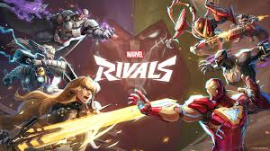
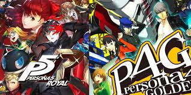

Videogames
One of my favorite things about myself is that I’m a nerd. I collect figurines, I keep up with the latest news on the various superhero universes, I love to read non-fiction books about various subjects, and – most importantly – I love video games.
Today, I’m currently playing Marvel Rivals, Black Myth: Wukong and Persona 5 Golden. In my past time, I like to have a good mix of a RPGs with MOBAs going so that I can oscillate depending on the mood that I am currently in. Additionally, I can appreciate the different communities that are built around the video games themselves: other gamers livestreaming their play, commentary from the video game community on their perspectives of the craft of the game, etc. I find video games to be a nice escape to jump into another world and imagine you’re able to do the impossible.
Marvel Rivals
My favorite game currently is Marvel Rivals. I grew up on the marvel cinematic universe and have grown to have a basic knowledge of the narratives that have also been written in the comics. As a result, when I saw there was a team-based player vs. player shooting game that featured the heroes, I knew I had to play. I enjoy using melee-based heroes or those with long ranges weapons. I also find it fun to collect the different skins the game has for the players in addition to other small customizations that you can do to your profile display card.
My Favorite Heroes To Play As
- Magik
- Emma Frost
- Hawkeye
Black Myth: Wukong

The next game that I am enjoying playing is Black Myth: Wukong. In the game, you play as the reincarnate of the Monkey King, Sun Wukong. Throughout the game, you are aiming to reclaim his fragmented soul through finding all the relics that were emblematic of the Monkey King. You traverse different stages that are expansive worlds in their own right, exploring the dark parts of Chinese ideologies, looking to take back what is being safeguarded from allowing the Monkey King to reclaim his title. I love this game as it is an open world RPG meaning that you get to play as a cool character with awesome abilities and solve how to beat the mission at hand, all while leveling up and acquiring new tools to help you beat the game.
Persona 5 Golden
The final game that I am enjoying playing currently is Persona 5 Golden. This is the 5th game in the Persona installment series that features the same plot: you are a high school senior who has been granted the abilities to change the hearts of the corrupt, and he must use the power to clear his name of the crime that he was falsely accused of. You live your life as the high school student by attending school, creating relationships with various community members and building attributes such as intellect, all while having the ability to traverse a space called the metaverse where people’s hearts can subconsciously be changed. In this metaverse world, you can control personas, embodiments of myths, legends, emotions, etc. Each has their own set of abilities and skills that you use to fight other personas within the metaverse. I enjoy this game as it is a turn-based RPG where, in a Pokémon-esque fashion, you can collect many different personas and train them to help you beat the game. I’ve also played previous installments of the series so it’s been fun to play the newest rendition.